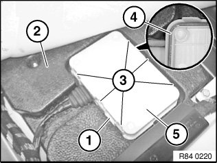
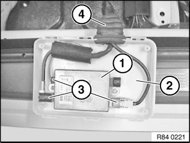

84 10 050 Removing and Installing/Replacing USB Hub
84 10 050 Removing And Installing (replacing) USB Hub

IMPORTANT: Read and comply with notes on protection against electrostatic damage (ESD protection).

Necessary preliminary tasks:
- Remove left front seat
- Remove front left entrance cover strip
- Fold back carpet for passenger compartment at front left in direction of travel

Remove USB hub protective socket (1) from footwell insert (2).
Unlock catches (3) with a suitable tool and remove USB hub protective socket cover (5).
Installation:
Make sure USB hub protective socket cover (5) engages correctly on USB hub protective socket lower section.
Seal (4) must not be damaged; if necessary, replace USB hub protective socket cover (5).

Remove USB hub (1) from USB hub protective socket lower section (2).
Installation:
Make sure rubber grommet (4) is correctly seated on USB hub protective socket lower section (2).
Disconnect plug connection (3).